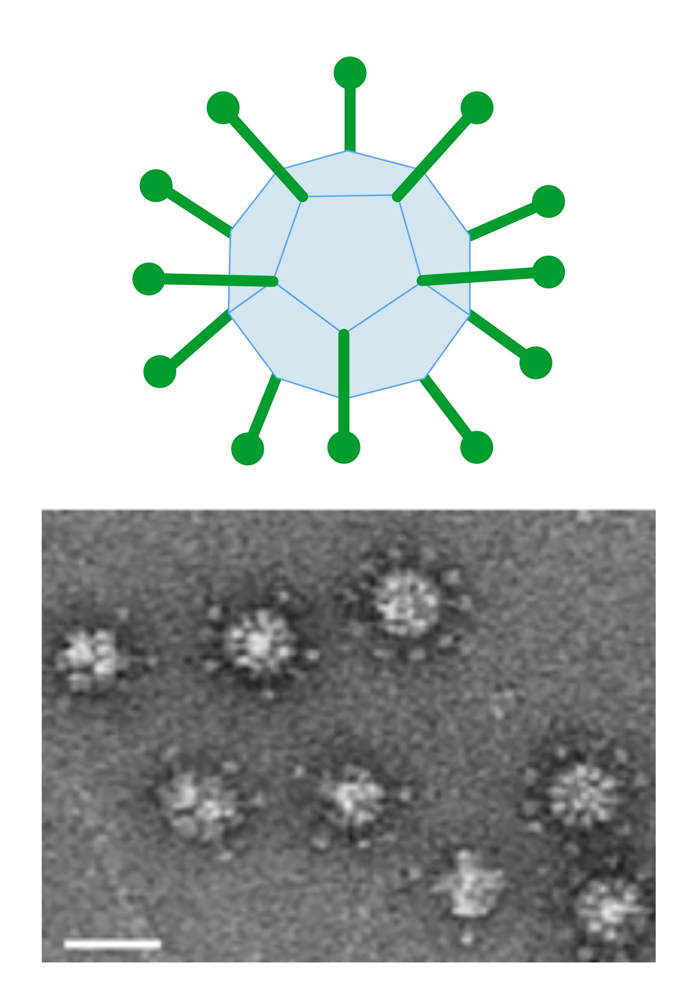

APLICACIONES EN LA CIENCIA Y TECNOLOGÍA
Los sólidos platónicos en ciencia y tecnología
Biomoléculas
En biología, varias macromoléculas y partículas virales adoptan formas geométricas altamente simétricas, como lo son los sólidos platónicos, porque ello les confiere estabilidad, economía de materiales y un ensamblaje eficiente. Por ejemplo, “el ácido nucleico que contiene el material genético está protegido por una capa proteica que se llama cápside, la cuál está compuesta de numerosas subunidades proteicas sujetas a ciertas simetrías que determinan que la cápside adquiera una estructura polihedral, que varía de unos virus a otros” (Extremina et al., 2001, p. 12).
Dentro de estas simetrías, “la naturaleza se encuentran numerosas formas geométricas, algunas de las cuales se rigen por leyes matemáticas o asombrosas reglas estéticas. Uno de los ejemplos más conocidos en microbiología es la forma icosaédrica de ciertos virus, con 20 caras triangulares y 12 aristas” (Besson, Vragniau, Vassal-Stermann, Dagher, y Fender, 2020, p. 1).
.png "La cápside icosaédrica del adenovirus")
La cápside icosaédrica del adenovirus
Tomada de
Besson et al. (2020). The adenovirus dodecahedron: Beyond the platonic story. Viruses, 12(7), 718.

Penton dodecaedro (Pt-Dd)
Tomada de
Besson et al. (2020). The adenovirus dodecahedron: Beyond the platonic story. Viruses, 12(7), 718.
Por otra parte, más allá de la cápside icosaédrica, la geometría platónica se manifiesta en etapas específicas del ciclo viral, como lo es “el ciclo de replicación natural del adenovirus, se pueden producir dodecaedros dependiendo del serotipo del adenovirus” (Besson et al., 2020, p. 3). Estas partículas reproducen los llamados pentones dodecaedricos (Pt-Dd) y sirven para adherirse a receptores celulares, lo que las convierte en herramientas útiles tanto para estudiar interacciones como para explorar aplicaciones biomédicas (Besson et al., 2020).
Estas mismas geometrías también pueden influir negativamente en las defensas naturales del organismo, donde el dodecaedro puede actuar como un señuelo que “absorbe moléculas defensivas y, con ello, facilitar la propagación del virus en ciertas condiciones” (Besson et al., 2020). A pesar de ello, al ser un sólido platónico predecible y repetible, sirve como herramienta para observar, medir y manipular estas interacciones.
Por tanto, estos ejemplos evidencian que las formas geométricas de los sólidos platónicos, en particular el icosaedro y el dodecaedro, se encuentran íntimamente relacionadas con la arquitectura molecular de los virus y otras biomoléculas, sirviendo como modelos de estabilidad, simetría y eficiencia en la organización biológica.
Cristalografía
Por otra parte, los sólidos platónicos también se manifiestan de manera natural en la estructura interna de los minerales y cristales, tal como afirma Marek (2012a), “los cinco sólidos platónicos son modelos ideales y primigenios de patrones cristalinos que se presentan de forma natural en todo el mundo mineral en innumerables variaciones” (p. 1), lo que demuestra que las formas platónicas no son solo construcciones teóricas, sino patrones reales en minerales.
Un caso representativo es el grupo de los granates, donde “se pueden encontrar formas como el cubo, el dodecaedro, el octaedro, el tetraedro, el trapezoedro, el diploide, el giroide, el hexaocaedro, el tetrahexaedro, el dodecaedro deltoide y el piritedro” (Marek, 2012a, p. 1). Además, en el sistema isométrico se incluyen también el diamante, fluorita, el oro, lapizlázuli, pirita, la plata, la sodalita, shalerita y la espinela (Marek, 2012a).
.png "Presencia de los sólidos platónicos en algunas formaciones naturales de ciertos cristales")
Presencia de los sólidos platónicos en algunas formaciones naturales de ciertos cristales
Tomada de
Epsilones. (s.f.). Laboratorio 011: Poliedros minerales.
Creación de materiales
Asimismo, los sólidos platónicos también inspiran innovadoras estrategias para el diseño de materiales, tal como afirman Dyskin, Estrin, Kanel-Belov, y Pasternak (2003) al plantear que elementos idénticos, con la forma de los cinco sólidos platónicos, pueden organizarse en estructuras laminares donde se entrelazan topológicamente. Se demuestra que los icosaedros truncados (buckyballs) también pueden organizarse en capas con entrelazamiento topológico. La posibilidad geométrica de tales ensamblajes abre interesantes vías en el diseño de estructuras y materiales (p. 1).
La idea principal radica en la llamada interconexión topológica o interbloqueo topológico, una organización estructural donde los bloques constructivos no están unidos químicamente, sino que permanecen trabados entre sí, de modo que confiere a los materiales una notable resistencia a la fractura y una elevada tolerancia al daño (Dyskin et al., 2003; Estrin, Krishnamurthy, y Akleman, 2021).
De esta forma, “las cinco formas platónicas (tetraedro, cubo, octaedro, dodecaedro e icosaedro) pueden ensamblarse en estructuras entrelazadas” (Dyskin et al., 2003, p. 2), por lo que la interconexión de los sólidos platónicos permite obtener materiales con propiedades mecánicas mejoradas, donde la estabilidad estructural depende de la simetría y del acoplamiento entre las piezas.
Además, “al ser una propiedad puramente geométrica, el entrelazamiento topológico es independiente de la escala” (Dyskin et al., 2003, p. 6), lo que permite su aplicación tanto en el diseño arquitectónico como en la ingeniería de nuevos materiales.
.png "Conjuntos topológicos entrelazados de cuerpos platónicos: (a) cubos, (b) octaedros, (c) dodecaedros")
Conjuntos topológicos entrelazados de cuerpos platónicos: (a) cubos, (b) octaedros, (c) dodecaedros
Tomada de
Estrin, Y. et al (2021). Design of architectured materials based on topological and geometrical interlocking. Journal of Materials Research and Technology, 15 , 11651178.
Referencias
- Referencia
- Referencia
- Referencia
- Referencia